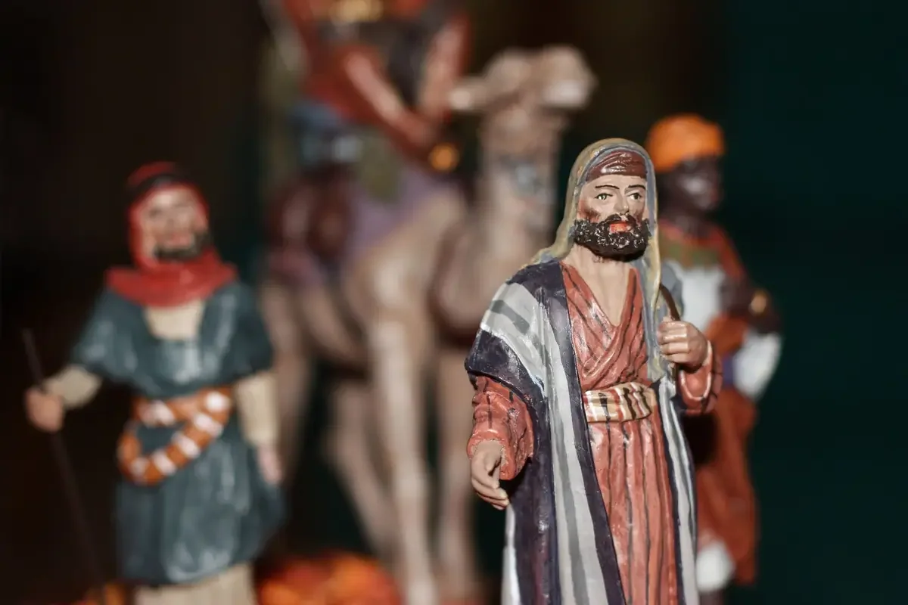
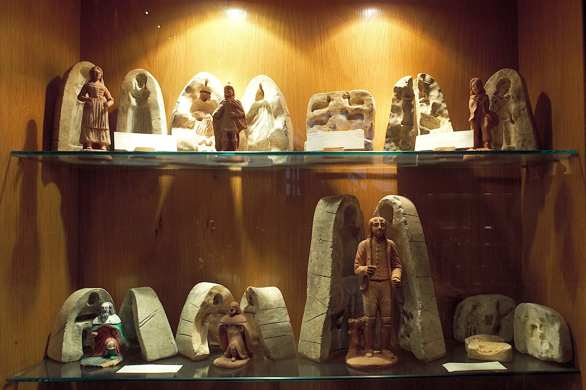
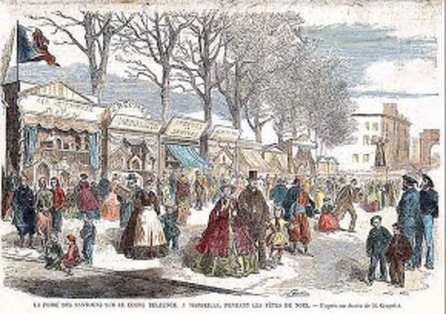
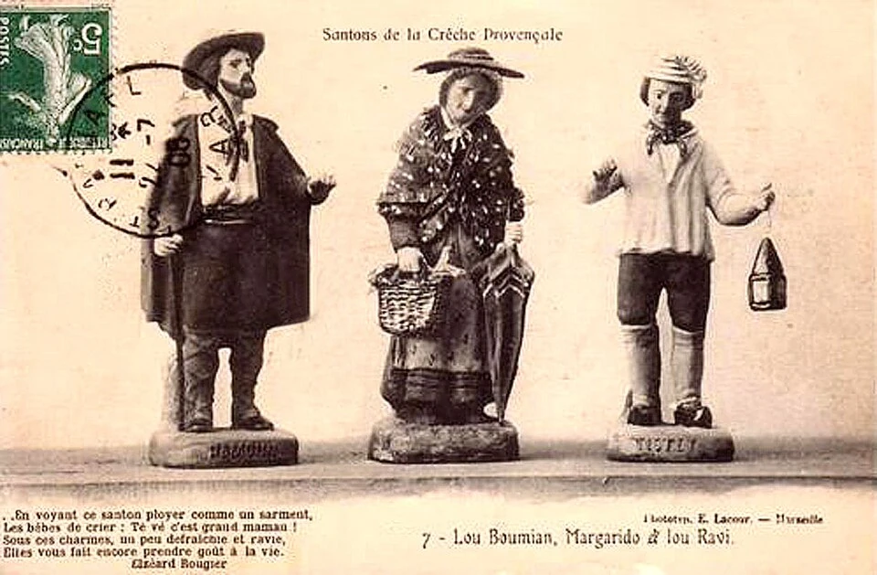

아직 펼치지 않은 카드손바닥 위의 베들레헴 · 3프로방스 상통프랑스 혁명기에 교회 문이 닫히자, 사람들은 집 안에서 무엇을 몰래 빚었을까요?교회 문이 닫히자 사람들이 몰래 작은 인형을 만들었대!
1800년 무렵부터프랑스 프로방스 · 마르세유
프로방스 상통
프로방스 사람들은 구유 인형을 ‘상통’이라고 불러요. ‘작은 성인’이라는 뜻이에요. 흙으로 빚어 석고 틀로 찍어 내고, 굽고, 한 색씩 칠해 만들어요. 두 팔을 번쩍 든 ‘라비’를 차례대로 만들어 보세요.
프로방스에는 흙으로 만든 작은 구유 인형이 있대. 두 팔을 번쩍 든 라비를 같이 만들어 볼까?
검수 전 시안이에요(기준서 2판). 장면에는 기록에 있는 것만 옮겼어요. 만드는 차례 그림은 프랑스 문화부 무형문화유산 목록의 차례를 따라 이 안내서가 그렸어요. 상상은 ‘눈 감고 상상해 보기’에만 썼어요.
시안 확인용카드 단계 미리 보기
1
작은 성인의 틀
프로방스 말로 ‘상통’은 ‘작은 성인’이라는 뜻이에요. ‘성인’이라는 말에 ‘작은’을 뜻하는 꼬리를 붙인 낱말이에요.
프로방스 사람들은 집 안에 작은 구유를 차렸어요. 프랑스 문화부 목록에 따르면, 집 구유가 처음 글에 나오는 것은 1692년이에요.
1800년 무렵, 마르세유의 장루이 라녤(1764~1822)은 이 인형을 흙으로 만들었어요. 흙은 틀로 찍어 내기 좋아서 같은 인형을 여럿 만들 수 있었어요. 라녤의 흙 인형에서 키 10~14cm쯤의 틀들이 나왔어요.

사진은 마르셀 카르보넬 상통 박물관에 있는 라녤의 틀이에요. 둥근 지붕 모양의 석고 덩이를 두 쪽으로 열면, 그 안에 사람 모양이 오목하게 파여 있어요.
라녤 때의 상통은 굽지 않은 흙이었어요. 흙으로 찍어 말리기만 했지요.
상통은 ‘작은 성인’이라는 뜻이래. 흙으로 만든 구유 인형이야.
물어보기석고 틀을 열면 무엇이 나올까?
2
장터에서 집 구유로
마르세유는 프랑스에서 처음으로 상통 장터를 연 도시예요. 1803년의 일이에요. 프랑스 투데이는 그때 상인이 세 사람이었다고 전해요.
사람들은 성탄을 앞두고 장터에 와서 집 구유에 더할 새 인물을 찾아요. 프로방스 구유의 바탕은 성가족, 소와 나귀, 세 박사, 가브리엘 천사, 양을 치는 목자예요. 그 둘레에 온 마을을 지어 올려요.


왼쪽은 19세기 중엽 마르세유의 상통 장터를 그린 판화예요. 오른쪽은 20세기 초 마르세유의 그림엽서예요. 엽서에는 ‘보미앙, 마르가리도, 라비’라고 적혀 있어요. 그 차례대로라면 맨 오른쪽 젊은이가 라비예요. 보미앙은 떠돌며 사는 보헤미안이에요.
옛날 마르세유에는 상통 장터가 열렸대. 지금도 열린대!
물어보기장터에서 너라면 어떤 상통을 데려올래?
3
라비 하나 만들기
프랑스 문화부는 2021년 상통 장인의 솜씨를 무형문화유산 목록에 적으며, 오늘 장인들이 상통을 만드는 차례를 남겼어요.
그 차례대로 라비를 만들어 보세요. 라비는 마을의 ‘놀란 사람’이에요. 놀라서 두 팔을 번쩍 들었어요. 구유에 드릴 것이 없어서 기쁨과 웃음만 가지고 왔대요.
단추를 누를 때마다 한 단계씩 만들어져요. 흙 한 덩이에서 시작해요.
이 안내서가 그린 상통 라비 · 프랑스 문화부 무형문화유산 목록(2021)의 만드는 차례를 바탕으로
흙과 물감의 빛깔
- 젖은 흙
- 흰 석고
- 마른 흙
- 구운 흙 · 980°C
- 살빛
- 붉은 모자
라비가 다 만들어졌어요. 흙 한 덩이가 빚기와 틀, 말리기와 굽기, 칠하기를 지나 두 팔을 든 작은 성인이 되었어요.
그림은 문화부 목록의 차례를 따라 이 안내서가 그렸어요. 가마에 굽는 차례는 20세기에 들어왔어요. 오바뉴의 상통 장인 테레즈 뇌뵈(1866~1946)가 처음 구웠어요.
흙을 틀에 꾹 눌러 찍고, 구워서, 색을 칠해!
물어보기라비는 왜 두 팔을 번쩍 들었을까?
눈 감고 상상해 보기
흙 냄새가 나는 작은 공방이에요. 석고 틀 두 쪽을 열면 촉촉한 흙 사람이 나와요. 선반에는 마르는 상통들이 줄지어 서 있고, 가마에서 막 나온 라비는 아직 따뜻해요. 붓끝에서 붉은 모자가 피어나요.
눈을 감아 봐. 흙 냄새가 나. 틀을 열면 작은 사람이 쏙! 붓으로 빨간 모자를 칠해.
나의 자리
드릴 것 하나 없이 두 팔을 번쩍 든 라비는, 구유 앞에서 무엇을 보았을까요?
라비는 아기 예수님을 보고 왜 두 팔을 번쩍 들었을까?
마음에 닿는 한 줄을 고르거나 직접 써 보세요. 한 줄을 남기면 이 자리의 도장이 찍혀요. 이 기기에만 저장돼요.
더 깊이
궁금한 칸만 펼쳐 읽어도 괜찮아요.
알고 보면
굽는 상통이 퍼지기까지 테레즈 뇌뵈가 상통을 굽기 시작했을 때는 값이 올라 따라 하는 사람이 적었어요. 제2차 세계 대전 뒤 전기 가마가 나오면서 널리 퍼졌어요.
오늘의 공방 마르세유 관광청은 마르세유에서 오바뉴, 엑상프로방스까지 상통 공방이 120곳쯤 있다고 소개해요.
기록마다 다른 점
‘상통’이라는 낱말 문화부 목록은 이 낱말이 1733년의 글에 처음 나온다고 적었어요. 2024년 프랑스 투데이의 글은 1826년에야 기록에 나온다고 했어요.
혁명 때의 집 구유 프랑스 투데이는 혁명 때 구유가 금지되었고, 1794년 성당이 닫힌 뒤 사람들이 집에서 몰래 구유를 만들었다고 적었어요. 문화부 목록은 1794년에 성탄 자정 미사가 금지되어 집 안의 작은 제단이 늘었다는 것을 ‘몇몇 사람이 내놓은 생각’이라고 조심스럽게 적었어요.
라비의 두 팔 문화부 목록과 마르세유 관광청은 라비를 두 팔을 든 사람으로 적어요. 20세기 초 그림엽서에 적힌 이름 차례대로라면 라비는 맨 오른쪽 젊은이예요. 이 라비는 한 손에 등불을 들고 다른 손만 들었어요.
직접 가 보기
확인한 날 · 2026년 11월 18일 · 바뀌기 쉬운 정보라 정기적으로 다시 확인해요
2026년 마르세유 상통 장터는 224번째예요. 11월 14일부터 2027년 1월 3일까지 옛 항구의 부두에서 열려요. 월~목요일과 일요일은 10~19시, 금·토요일은 10~20시이고, 들어가는 값은 없어요.
공식 개막은 11월 15일 일요일 낮 12시예요. 그 앞 10시 30분에 생페레올 레 오귀스탱 성당에서 상통 장인들의 미사가 열려요. 일정은 아직 확정 전이라 바뀔 수 있어요.
아홉 단계 끝까지 금박
빚기부터 칠하기까지 아홉 단계를 끝까지 해 보면 카드에 금박이 입혀져요.
빚기 → 틀 → 흙 넣기 → 꺼내기 → 말리기 → 다듬기 → 굽기 → 살빛 → 옷과 모자
아이와 함께 채색
아이와 함께 ‘영화처럼 보기’를 끝까지 보면 카드가 채색돼요.
아이와 함께 ‘영화처럼 보기’를 끝까지 보기
근거 보기 (5)
- 프랑스 문화부 무형문화유산 목록 「프로방스 상통 장인의 솜씨」(2021, 안토냉 샤베르) — 만드는 차례(빚기·어미 틀 300~400개·두 쪽에 흙·쇠막대·닷새~몇 주 말리기·칼과 붓과 사포·12시간 980°C와 48시간 식히기·살빛부터 칠하기), 1733년의 낱말, 1692년의 집 구유, 1794년에 대한 조심스러운 생각, 라녤의 흙과 10~14cm 틀, 뇌뵈의 굽기, 1803년 장터, 두 팔을 든 라비
- 마르세유 관광청: 프로방스의 상통 — 라비(놀란 사람, 두 팔, 기쁨과 웃음), 보헤미안 부부, 구유의 바탕 인물, 공방 120곳쯤
- 프랑스 투데이(티르자 발루아, 2024.12.14): 프로방스의 상통 — 1826년의 낱말, 혁명 때의 집 구유, 라녤의 흙 인형, 1803년 장터와 상인 세 사람, 굽지 않은 상통
- 마이 프로방스: 제224회 마르세유 상통 장터 — 2026년 11월 14일~2027년 1월 3일, 옛 항구 부두, 여는 시간, 개막과 미사, 무료(2026년 11월 18일 확인)
- 위키미디어 공용: 라녤의 틀 사진 설명 — 장루이 라녤(1764~1822)의 틀, 마르셀 카르보넬 상통 박물관
그림·사진·소리 출처
‘처음 만나는 기독교 문화’의 깊은 카드예요. 카드 단계와 남긴 글은 이 기기에만 저장돼요.